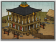
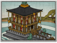

Requires
- Buildings: 
- Arts:

Enables
- Buildings: 
- Units:


Spawned Garrisons
- Units:
Basic Building Statistics (can be modified by difficulty level, arts, skills, traits and retainers)
- Cost: 3200
- -1 to recruitment time of bushi units
Description
To strike the mark cleanly is a sign of mastery.
This dojo allows the training of mounted samurai, and reduces the time needed to train all sword- and bow-armed samurai and attendant troops. Nearly every warrior culture on the Eurasian landmass defined its warrior elite as fighters on horseback. The word for "cavalryman" is often synonymous with a ruling, higher social caste within a society. They quite literally look down on the peasants. This is not surprising: apart from anything else, the expense of buying and owning a horse meant than anyone who had a warhorse was, by definition, an important man in the community. The samurai began as mounted warriors. As a child, a samurai was put in the saddle almost as soon as he could walk. His weapons training emphasised battle from horseback, although the earliest samurai fought as mounted bowmen, using their horses to move swiftly away from any threat before returning to harass their enemies once again. Early samurai armour, for example, is perfect for this fighting style; it will keep out arrows rather effectively, but not sword cuts.